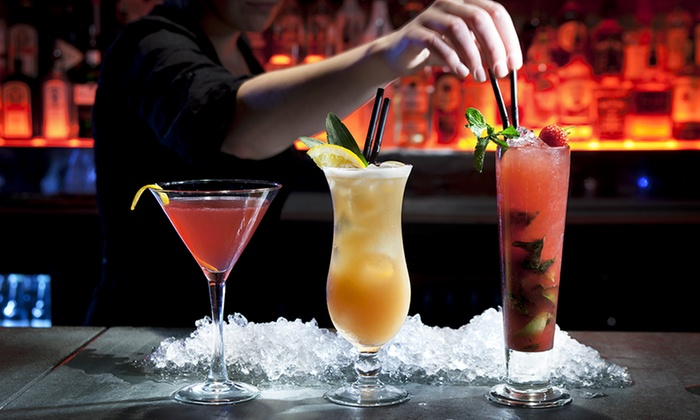

Become a cocktail connoisseur - follow our simple recipes and watch our reccommended videos to create your very own exotic cocktails at home!

Cosmopolitan
Ingredients
35ml / 1 ½ fl oz Vodka
15ml / ½ fl oz orange liqueur
Fresh Lime Juice
25ml / ½ fl oz Cranberry Juice
Orange Peel to Garnish
Method
Place the vodka, orange liqueur, lime juice and cranberry juice into a cocktail shaker and fill with ice. Shake hard and then strain into a coupe glass or small Martini glass.
Hold the piece of orange peel over the glass and carefully flame with a match. Garnish the cocktail with the flamed orange peel and serve.